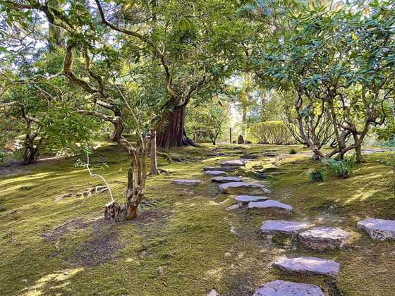
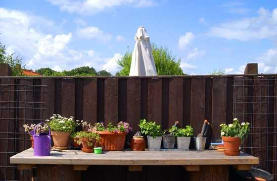
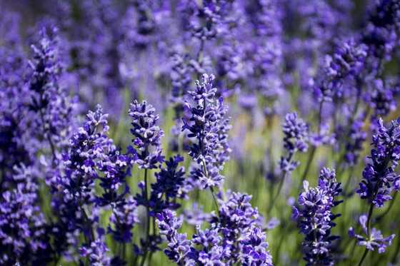
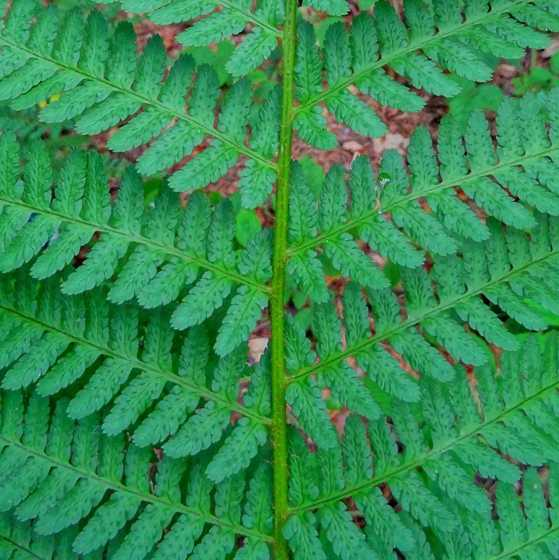
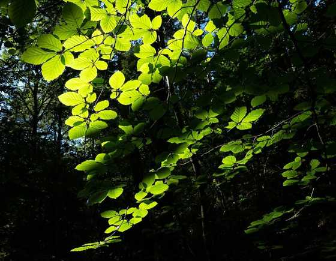
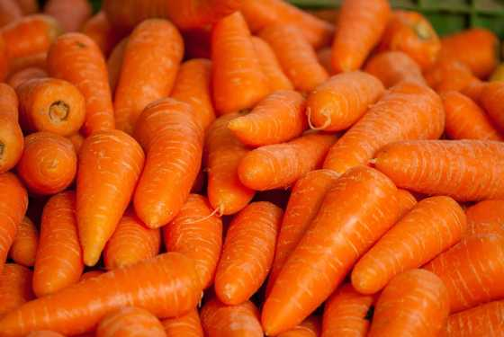
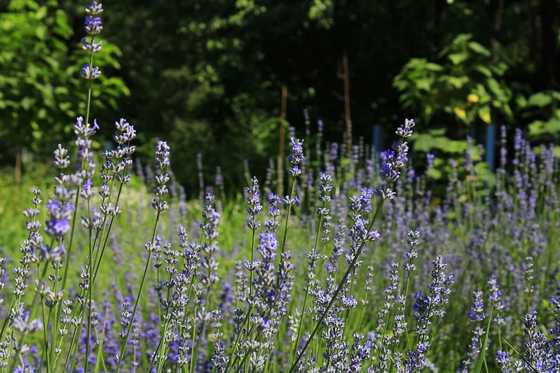
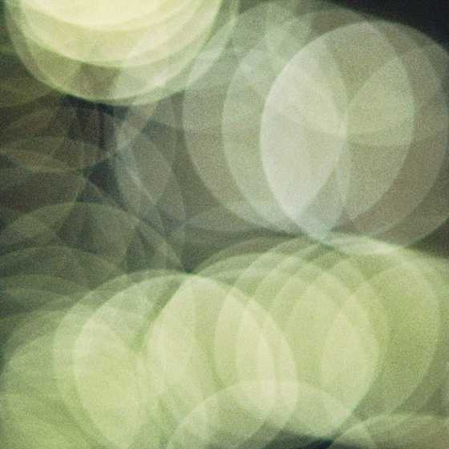

鳥取県境港市・お庭のあるグルテンフリーカフェ
ふらっと立ち寄って、
お庭のゆったりした時間を。
お庭を眺めながら、野菜たっぷりの手作りごはんをいただく。いつでも気軽に立ち寄れる、お庭カフェです。
お店のこと
少しずつ育てたお庭と、安心して食べられるごはん。
紹介記事によると、お庭カフェ briller(ブリエ)は2025年10月10日に境港市大正町でオープンしました。店主は「いつでも気軽にふらっと立ち寄って、庭の雰囲気を味わいながら、ゆったりとした空間と時間を楽しんでほしい」と話しているそうです。
お庭は店主が少しずつ手を加えて作り上げたもので、奥の庭には東屋やパラソル付きのテーブル席があります。ごはんは小麦を控えている方やアレルギーのある方にも安心して食べてもらえるよう、素材を選んで手作りされています。木のぬくもりのある店内には店主ご夫妻手作りのインテリアが並び、靴を脱いで上がれる小上がりには、木のおもちゃや絵本があるとのことです。
情報源: 鳥取マガジン / 日刊Lazuda / Instagram
店名の意味や建物の由来は確認できていません。上記の事実以外の文章(見出しの言い回しなど)は制作側の表現です。
お庭のイメージ
緑と光と、ゆるやかな時間。
写真はお庭の雰囲気を伝えるフリー素材のイメージです。お店の実際の庭・料理ではありません。








メニュー
野菜を主役にしたランチ。
紹介記事では、次のようなメニューが紹介されています。内容・価格・提供数は変わることがあるため、詳細は「準備中」としています。
野菜びより
蒸す・煮る・マリネなど、いろいろな調理法で仕上げた野菜のプレートランチ。
価格: 準備中
カレーびより
米粉などを使ったグルテンフリーのバターチキンカレーのランチ。
価格: 準備中
こどもごはん
お子さま向けのメニューがあると紹介されています。
価格: 準備中








写真は野菜やお庭の雰囲気を伝えるフリー素材のイメージです。
口コミ
こんなお声が届きそうです
以下は制作側が作成した創作のイメージ例で、実在のお客様の声ではありません。
お庭を眺めながらのランチは、時間がゆっくり流れるようで気持ちよかったです。
小麦を控えているので、食べられるものを選べるのが助かります。野菜がたっぷりでした。
小上がりに絵本があって、子どもも退屈せずに過ごせました。
アクセス
ご案内
| 所在地 | 〒684-0004 鳥取県境港市大正町126 |
|---|---|
| 電話 | 準備中 |
| 営業時間 | 準備中 |
| 定休日 | 準備中 |
| SNS | Instagram @briller_oniwa_tottori |
営業時間・定休日・価格は変更されることがあるため、掲載せず「準備中」としています。最新情報はInstagramをご覧ください。